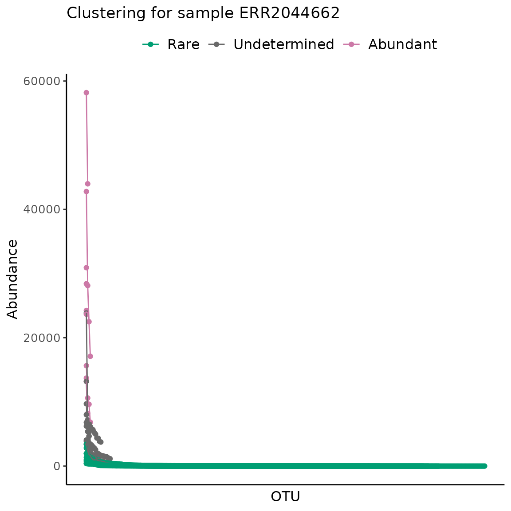
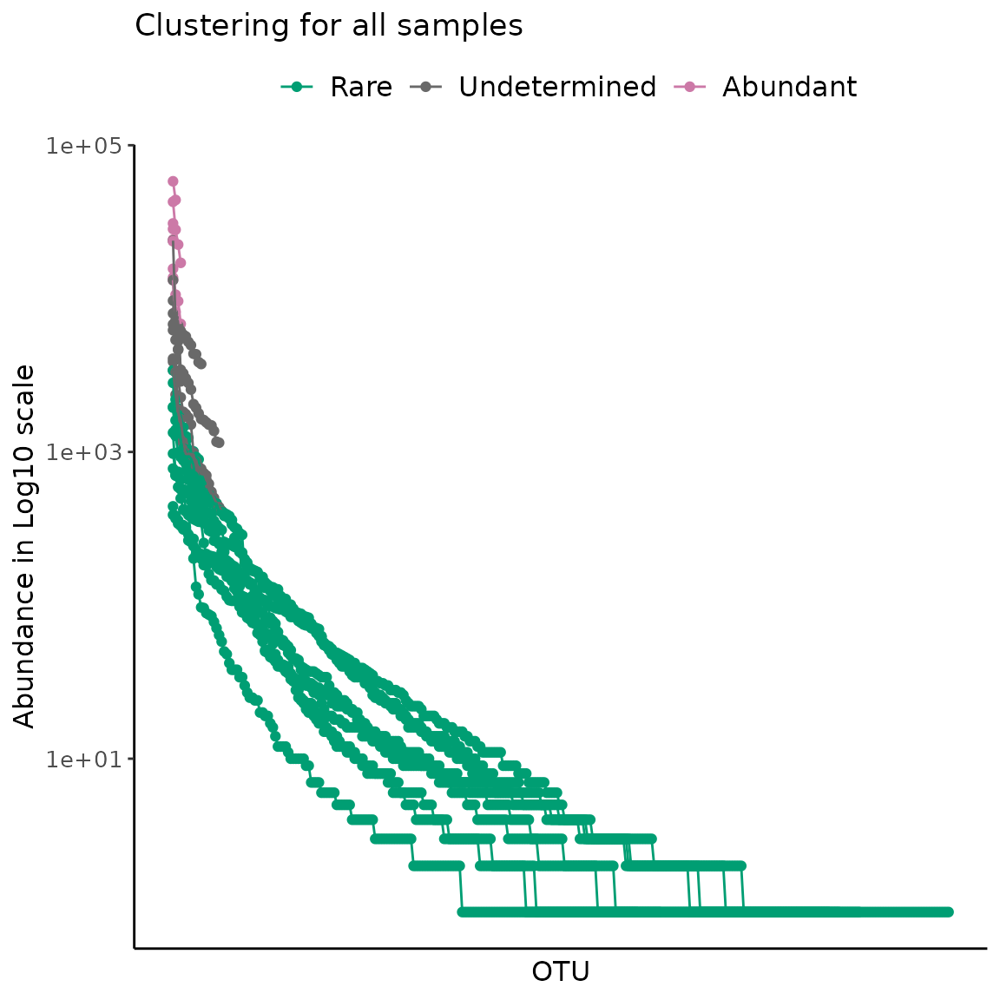
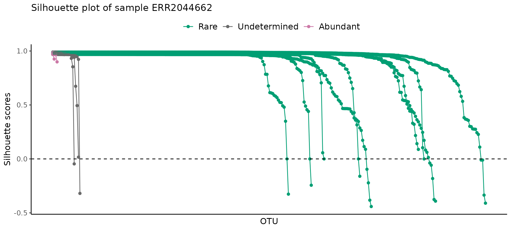
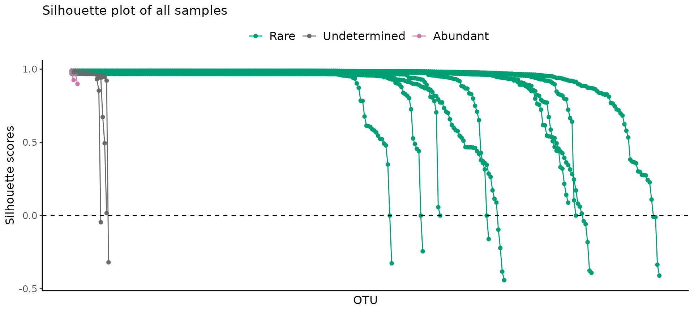
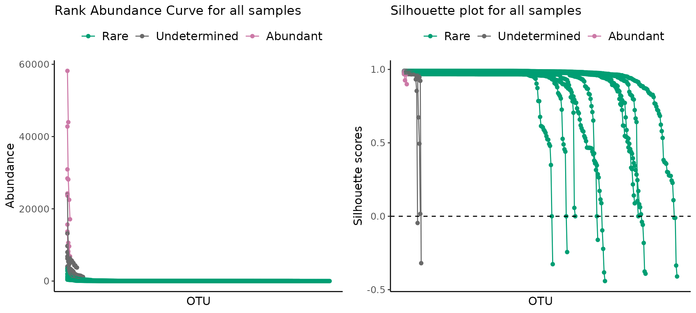

Unsupervised Learning Based Definition Of Microbial Rare Biosphere
The R package ulrb solves the problem of the definition of rarity by replacing human decision with an unsupervised machine learning algorithm (partitioning around medoids, k-medoids). This algorithm works for any type of microbiome data, provided there is an abundance score for each phylogenetic unit. For validation of this method to several kinds of molecular data and environments, please see Pascoal et al., 2023 (in preparation). Preliminary results indicate that this method works for oter biological systems, provided there is an abundance table.
In this tutorial we will illustrate how to define the microbial rare biosphere with a small, publicly available dataset, the Norwegian Young Sea Ice Expedition, 2016 (N-ICE). The molecular data will be from amplicon sequencing of 16S rRNA gene (for sequencing details, see Sousa et al., 2019), raw sequences are available in the European Nucleotide Archive (ENA) under accession number ERP024265, and they were processed into OTUs by MGnify (Mitchell et al.,2019).
The N-ICE dataset consists of 9 samples, collected during the winter to spring transition of 2015 by fixing the vessel on drifting ice (Granskog et al., 2018). Samples were collected at various depths (from 5m to 250m) and the ice drifted across different regions, DNA was collected for 16S amplicon sequencing and metagenomes (de Sousa et al., 2019); and bioinformatic processing of reads was performed by Mgnify platform (v5) (Mitchel et al., 2020).
For this tutorial we are using the OTU table downloaded from the link https://www.ebi.ac.uk/metagenomics/studies/MGYS00001922#analysis in 06-01-2023 and focus solely on the 16S amplicon data.
library(ulrb)
library(dplyr)
#>
#> Attaching package: 'dplyr'
#> The following objects are masked from 'package:stats':
#>
#> filter, lag
#> The following objects are masked from 'package:base':
#>
#> intersect, setdiff, setequal, union
library(tidyr)
library(ggplot2)Brief note on nomenclature
We use the term “phylogenetic units” to refer to the highest resolution, distinct unit identified. This can be species, OTU, ASV, …
We use the term “abundance table” to refer to the table with, at least, the abundance score for each phylogenetic unit. Any additional data can be added, this can be an OTU table, ASV table…
We also use the term “scale” or “scaling”, which can also appear in the literature as “normalization”, “transformation”, …
Pre-processing of data prior to clustering algorithm
The package ulrb will require that the abundance table is in tidy (or long) format, with a column for the abundance score used and another column for samples. Any additional columns are allowed.
Regarding the abundance score, we are not scaling the abundance score in this vignette, because the k-medoids algorithm will be applied “per sample” to the values of the abundance score. This means that any scaling, e.g. relative abundance, center log-ratio, … Will not have an effect on the algorithm, because the distance values between observations will remain the same. However, if the algorithm was applied to more variables (not only abundance), then scaling could make a difference. Thus, we consider that it is best to use absolute values in this tutorial, to avoid misleading the reader into thinking that some scaling has to be done.
Notwithstanding, for publication purposes and for the purposes of other data processing steps, it might make sense to apply some sort of scaling. As long as the number of observations, i.e. the number of phylogenetic units, is the same, then the distance between them will be the same.
If the user decides to apply any quality filtering to the abundance table, like rarefaction, it should be done before using the clustering method.
In summary, the algorithm will be applied to your final, clean abundance table, with any abundance score.
Load and clean abundance table
# Load raw OTU table from N-ICE
load("../data/nice_raw.rda")
# Change name of first column
nice_clean <- rename(nice_raw, Taxonomy = "X.SampleID")
# Select 16S rRNA amplicon sequencing samples
selected_samples <- c("ERR2044662", "ERR2044663", "ERR2044664","ERR2044665", "ERR2044666", "ERR2044667","ERR2044668", "ERR2044669", "ERR2044670")
# Add a column with phylogenetic units ID (OTU in this case)
nice_clean <- mutate(nice_clean, OTU = paste0("OTU_", row_number()))
# Select relevant columns
nice_clean <- select(nice_clean, selected_samples, OTU, Taxonomy)
#> Warning: Using an external vector in selections was deprecated in tidyselect 1.1.0.
#> ℹ Please use `all_of()` or `any_of()` instead.
#> # Was:
#> data %>% select(selected_samples)
#>
#> # Now:
#> data %>% select(all_of(selected_samples))
#>
#> See <https://tidyselect.r-lib.org/reference/faq-external-vector.html>.
#> This warning is displayed once every 8 hours.
#> Call `lifecycle::last_lifecycle_warnings()` to see where this warning was
#> generated.
# Separate Taxonomy column into each taxonomic level
nice_clean <- separate(nice_clean, Taxonomy, c("Domain","Kingdom","Phylum","Class","Order","Family","Genus","Species"),sep=";")
#> Warning: Expected 8 pieces. Missing pieces filled with `NA` in 912 rows [1, 2, 4, 5, 6,
#> 7, 8, 9, 10, 11, 12, 13, 14, 15, 16, 17, 18, 19, 20, 21, ...].
# Remove Kingdom column, because it is not used for prokaryotes
nice_clean <- select(nice_clean, -Kingdom)
# Remove eukaryotes
nice_clean <- filter(nice_clean, Domain != "sk__Eukaryota")
# Remove unclassified OTUs at phylum level
nice_clean <- filter(nice_clean, !is.na(Phylum))
# Simplify name
nice <- nice_clean
# Quick look at the table
head(nice)
#> ERR2044662 ERR2044663 ERR2044664 ERR2044665 ERR2044666 ERR2044667 ERR2044668
#> 1 165 323 51 70 134 216 0
#> 2 0 0 1 0 0 1 0
#> 3 0 0 1 2 2 6 0
#> 4 541 1018 351 115 241 1633 177
#> 5 8 5 41 15 14 146 0
#> 6 15 31 590 133 174 1814 12
#> ERR2044669 ERR2044670 OTU Domain Phylum
#> 1 11 0 OTU_2 sk__Archaea p__Euryarchaeota
#> 2 0 0 OTU_3 sk__Archaea p__Euryarchaeota
#> 3 0 0 OTU_4 sk__Archaea p__Euryarchaeota
#> 4 1371 7 OTU_5 sk__Archaea p__Euryarchaeota
#> 5 14 0 OTU_6 sk__Archaea p__Thaumarchaeota
#> 6 173 2 OTU_7 sk__Archaea p__Thaumarchaeota
#> Class Order Family
#> 1 c__Candidatus_Poseidoniia <NA> <NA>
#> 2 c__Candidatus_Poseidoniia o__Candidatus_Poseidoniales f__
#> 3 c__Halobacteria o__Halobacteriales <NA>
#> 4 c__Thermoplasmata <NA> <NA>
#> 5 <NA> <NA> <NA>
#> 6 c__ o__ f__
#> Genus Species
#> 1 <NA> <NA>
#> 2 g__ s__Marine_group_II_euryarchaeote_REDSEA-S03_B6
#> 3 <NA> <NA>
#> 4 <NA> <NA>
#> 5 <NA> <NA>
#> 6 g__Candidatus_Nitrosopelagicus <NA>Transform abundance table into tidy/long format
Now that we have a cleaned OTU table, we can transform it to tidy
format. You can do this part in any order and according to your own data
format. We made the function prepare_tidy_data() to help
transform the two most common data formats for abundance tables:
- phylogenetic units in rows, samples in columns;
- phylogenetic units in columns, samples in rows.
In this example, we have a data.frame with phylogenetic units as rows and samples in various columns, so this is not a tidy format. We need to collapse all columns with samples into a single “Abundance” and “Samples” column, so that each variable corresponds to a single column, i.e. tidy.
For this we just need to apply the prepare_tidy_data()
function to the cleaned data. Note that you need to specify in which
format your abundance table is. In this example, samples are in
different columns, so we set the argument samples_in to “cols”; if it
was the opposite situation, with samples in rows, we would set
samples_in to “rows”.
This function is optional and if you use it you really should verify if it is transforming the data correctly, because your own data might be different from our standard examples.
nice_tidy <- prepare_tidy_data(nice, sample_names = selected_samples, samples_in = "cols")Apply definition of rare biosphere with unsupervised learning
Now we are ready to use the central function of the package ulrb,
which is define_rb().
This function will add new columns to the input data.frame, automatically deciding the classification of each phylogenetic unit, per sample, by means of the partition around medoids algorithm.
The algorithm is run by the pam() function of the
cluster package. The output are the clusters, which we
translate into classifications, and provides statistical scores to
interpret the robustness of the clusters formed. From those statistics,
we select the silhouette scores, which will be used to evaluate the
results later on. Additionally, the data.frame will include a nested
list with the output from pam(), for more experienced users
to analyze if necessary.
Regarding the classifications, we are setting a default to “rare”,
“undetermined” and “abundant”, based on Pascoal et al., 2023 (manuscript
in preparation). However, the user can set any vector of
classifications, as long as they follow the rules of the number of
clusters, or k, from pam(). Meaning, the number of
classifications can’t be more than the number of distinct observations
in the data. In practice this is not a concern, because we think most
researchers will either use our default, or “rare” vs “abundant”, or a
more nuanced “very rare”, “rare”, “abundant”, “very abundant”. The point
is that the classification can be decided in a study by study
context.
Since the default output includes so many columns that are there to support the classification obtained, we added an argument, simplified, which if TRUE will return a simplified version of the output, without silhouette scores, just the final classification, plus all the input data. We will use the default, simplified = FALSE.
classified_table <- define_rb(nice_tidy)
#> Joining with `by = join_by(Sample, Level)`
# Quick output check
colnames(classified_table)
#> [1] "Sample" "Classification"
#> [3] "OTU" "Domain"
#> [5] "Phylum" "Class"
#> [7] "Order" "Family"
#> [9] "Genus" "Species"
#> [11] "Abundance" "pam_object"
#> [13] "Level" "Silhouette_scores"
#> [15] "Cluster_median_abundance" "median_Silhouette"
#> [17] "Evaluation"
classified_table %>%
select(OTU, Sample, Abundance,
Classification, Silhouette_scores, Cluster_median_abundance,
pam_object) %>%
head()
#> # A tibble: 6 × 7
#> # Groups: Sample, Classification [1]
#> OTU Sample Abundance Classification Silhouette_scores Cluster_median_abund…¹
#> <chr> <chr> <int> <fct> <dbl> <dbl>
#> 1 OTU_2 ERR20… 165 Rare 0.985 5.5
#> 2 OTU_5 ERR20… 541 Rare 0.985 5.5
#> 3 OTU_6 ERR20… 8 Rare 0.985 5.5
#> 4 OTU_7 ERR20… 15 Rare 0.985 5.5
#> 5 OTU_8 ERR20… 5 Rare 0.985 5.5
#> 6 OTU_… ERR20… 4 Rare 0.985 5.5
#> # ℹ abbreviated name: ¹Cluster_median_abundance
#> # ℹ 1 more variable: pam_object <list>Fully automated version
In the previous example, there is still one level of subjective
decision, which is the number of classifications to use (e.g.
“rare”, “undetermined” and “abundant” would be k = 3). However, we added
an option to the main function, define_rb(), which allows
for the automatic decision of the number of clusters. This automation
works under the assumption that the range of good k values lies between
3 and 10 (see Pascoal et al., 2023 for reasoning behind this). In
vignette("explore-classifications"), we explain in more
detail how the automation works and how you can make your own decision
regarding k, using several metrics.
# Simple automation example
define_rb(nice_tidy, automatic = TRUE)
#> Automatic option set to TRUE, so classification vector was overwritten
#> K= 3 based on Average Silhouette Score.
#> Joining with `by = join_by(Sample, Level)`
#> # A tibble: 2,177 × 17
#> # Groups: Sample, Classification [27]
#> Sample Classification OTU Domain Phylum Class Order Family Genus Species
#> <chr> <fct> <chr> <chr> <chr> <chr> <chr> <chr> <chr> <chr>
#> 1 ERR20446… 1 OTU_2 sk__A… p__Eu… c__C… NA NA NA NA
#> 2 ERR20446… 1 OTU_5 sk__A… p__Eu… c__T… NA NA NA NA
#> 3 ERR20446… 1 OTU_6 sk__A… p__Th… NA NA NA NA NA
#> 4 ERR20446… 1 OTU_7 sk__A… p__Th… c__ o__ f__ g__C… NA
#> 5 ERR20446… 1 OTU_8 sk__A… p__Th… c__ o__N… NA NA NA
#> 6 ERR20446… 1 OTU_… sk__A… p__Th… c__ o__N… f__Ni… g__N… NA
#> 7 ERR20446… 1 OTU_… sk__B… p__Ac… NA NA NA NA NA
#> 8 ERR20446… 1 OTU_… sk__B… p__Ac… c__A… o__A… NA NA NA
#> 9 ERR20446… 1 OTU_… sk__B… p__Ac… NA NA NA NA NA
#> 10 ERR20446… 1 OTU_… sk__B… p__Ac… c__A… NA NA NA NA
#> # ℹ 2,167 more rows
#> # ℹ 7 more variables: Abundance <int>, pam_object <list>, Level <fct>,
#> # Silhouette_scores <dbl>, Cluster_median_abundance <dbl>,
#> # median_Silhouette <dbl>, Evaluation <chr>Verify results
It is good practice to check if results from unsupervised learning look sane. To help with this task, we made a group of functions that will help researchers understand if they need more or less classifications (change the value of k), or if the algorithm just doesn’t work. There is no hard rule to verify unsupervised learning, but results should look reasonable and follow expectations. We have seen that the results from this method are consistent with previous definitions of rarity, for example, most phylogenetic units are rare and only very few are abundant, but we avoid introducing a human decision on which points are rare or abundant.
The plots are the (1) Rank Abundance Curve and the (2) Silhouette plots. The first will be more helpful for microbial ecologists, while the second will be more helpful for data scientists.
Both plots are made available by the function
plot_ulrb() (to verify clustering and Silhouette score); or
plot_ulrb_clustering() and
plot_ulrb_silhouette(), to verify the clustering or the
Silhouette, respectively.
(1) Rank Abunddance Curve (RAC) to verify clustering
The RAC is a common tool in microbial ecology to describe the detection limits of different methods and the distribution of species abundance (Pedrós-Alió, 2012) - it ranks all species from most to least abundant, resulting in a few species with very high abundance and a “long-tail” of low abundance species (which are called the “rare biosphere”). However, there is no objective method to decide where the “long-tail” begins.
The ulrb method considers that the terms “rare” and “abundant” are relative, i.e. one phylogenetic unit is rare if, and only if, compared to an abundant one (and vice-versa). We explore the consequences and assumptions that play into this in Pascoal et al., 2023 (manuscript in preparation). But this means that the method is not looking for the beginning of the “long-tail”, it is comparing the abundance of all phylogenetic units, and clustering them accordingly.
Thus, if we plot the standard RAC and then color each phylogenetic unit according with the unsupervised classification, we can check if the unsupervised classification is consistent with the notion that the rare-biosphere is within the “long-tail”.
To do this, we provide the function
plot_ulrb_clustering(). Again, the abundance score can be
transformed and the Log10 scale can be applied optionally. Other ggplot2
functions and arguments can be used, or you can also make your own plots
and analysis.
# One sample as example
plot_ulrb_clustering(classified_table,
sample_id = selected_samples[1],
taxa_col = "OTU") +
labs(title = paste("Clustering for sample", selected_samples[1]))
# All samples, with centrality metric
plot_ulrb_clustering(classified_table,
taxa_col = "OTU",
plot_all = TRUE,
log_scaled = TRUE) +
labs(title = "Clustering for all samples")
#> Warning: Removed 197 rows containing missing values (`geom_segment()`).
From the RAC obtained, we confirm that the unsupervised classification provides a reasonable result. Because the rare biosphere is indeed in the “long-tail”, followed by a transition region, which we term “undetermined”, because they are neither rare, more abundant, and a few extreme points which are abundant.
(2) Silhouette plots
The Silhouette plot provides a notion of the coherence of the points inside each cluster. The values for each observation range between -1 and +1, the closer to +1, the more coherent is the cluster. Usually, most observations will be very close to +1, and a few will have low values. As a rule of thumb, if most values are above 0.75, then the clusters are strong, but if you have many observations close to 0, but positive, the cluster might be artificial; for negative values, then the clusters have no structure.
For more details see the documentation from the functions
plot_ulrb_silhouette() and check_avgSil(); we
also refer to Chapter 2 of “Finding Groups in Data: An Introduction to
Cluster Analysis” (Kaufman and Rousseuw, 1991), for more details on
interpretation of Silhouette plots.
# One sample as example
plot_ulrb_silhouette(classified_table,
sample_id = selected_samples[1],
taxa_col = "OTU") +
labs(title = paste("Silhouette plot of sample", selected_samples[1]))
#
plot_ulrb_silhouette(classified_table,
sample_id = selected_samples[1],
taxa_col = "OTU",
plot_all = TRUE) +
labs(title = "Silhouette plot of all samples")
#> Warning: Removed 197 rows containing missing values (`geom_segment()`).
As expected, most points were very close to +1, with very few points falling below 0.5.
Sanity check summary
We provide the function plot_ulrb() that wraps around
plot_ulrb_clustering() and
plot_ulrb_silhouette() to plot the RAC and Silhouette plot
in the same grid. This function works for a single sample or for all
samples.
# For a single sample
plot_ulrb(classified_table,
sample_id = selected_samples[1],
taxa_col = "OTU")
# For all samples
plot_ulrb(classified_table,
taxa_col = "OTU",
plot_all = TRUE)
#> Warning: Removed 197 rows containing missing values (`geom_segment()`).
#> Removed 197 rows containing missing values (`geom_segment()`).
References
Pascoal et al., 2023 (manuscript in preparation)
Granskog, M. A., Fer, I., Rinke, A., & Steen, H. (2018). Atmosphere-Ice-Ocean-Ecosystem Processes in a Thinner Arctic Sea Ice Regime: The Norwegian Young Sea ICE (N-ICE2015) Expedition. Journal of Geophysical Research: Oceans, 123(3), 1586–1594.
de Sousa, A. G. G., Tomasino, M. P., Duarte, P., Fernández-Méndez, M., Assmy, P., Ribeiro, H., Surkont, J., Leite, R. B., Pereira-Leal, J. B., Torgo, L., Magalhães, C. (2019). Diversity and Composition of Pelagic Prokaryotic and Protist Communities in a Thin Arctic Sea-Ice Regime. Microbial Ecology, 78(2), 388–408.
Mitchell, A. L., Almeida, A., Beracochea, M., Boland, M., Burgin, J., Cochrane, G., Crusoe, M. R., Kale, V., Potter, S. C., Richardson, L. J., Sakharova, E., Scheremetjew, M., Korobeynikov, A., Shlemov, A., Kunyavskaya, O., Lapidus, A., Finn, R. D. (2019). MGnify: the microbiome analysis resource in 2020. Nucleic Acids Research, 48, D570–D578.
Pedrós-Alió, C. (2012). The Rare Bacterial Biosphere. Annual Review of Marine Science, 4(1), 449–466.
Kaufman, L., & Rousseuw, P. J. (1991). Chapter 2 in book Finding Groups in Data: An Introduction to Cluster Analysis. Biometrics, 47(2), 788.